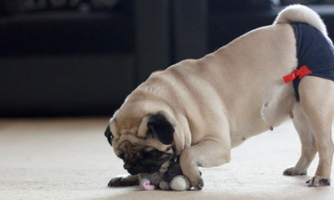

Curiosidades de los perros
Sus aptitudes para el trabajo son múltiples y muy diversasLos perros son, sin duda, los animales de compañía por excelencia. Sin embargo, a lo largo de la historia, los perros no solo han sido compañeros de vida para las personas, sino también excelentes compañeros de trabajo. De todas las características y curiosidades sobre los perros, la inteligencia y la enorme capacidad de aprendizaje que caracterizan a esta especie ha permitido que se utilicen para labores muy diversas, como:
El pastoreo
La caza
La guarda y defensa
La búsqueda y rescate de personas
La terapia emocional
La detección de drogas y explosivos
No son carnívoros estrictos A diferencia de los gatos, los perros no son carnívoros estrictos. Otro de los datos curiosos de los perros es que en sus orígenes eran animales cazadores, pero a lo largo del proceso de evolución y domesticación se fueron incluyendo en su dieta alimentos ricos en fibra y en hidratos de carbono (como hortalizas y cereales), lo que ha hecho que hoy en día su dieta no deba basarse exclusivamente en el consumo de carne. Te dejamos este otro artículo de ExpertoAnimal sobre la Fibra para perros: su importancia, alimentos y suplementos.
Son animales muy voraces: Los perros son animales voraces por naturaleza, pues en su estado natural estaban acostumbrados a realizar comidas abundantes para poder soportar varios días de ayuno hasta conseguir una nueva presa. Es decir, podemos decir que los perros llevan la voracidad “codificada genéticamente”, lo que hace que les resulte difícil regular su ingestión. Por ello es importante no aportarles la comida ad libitum (a libre disposición), sino racionarla en varias tomas al día para evitar la sobrecarga del aparato digestivo.
Tienen “dientes de leche” Al igual que las personas, los perros también tienen una primera dentición de leche o decidua, la cual se reemplaza por la dentición permanente o definitiva entre los 2 y los 6 meses de edad. No obstante, es poco habitual detectar la caída de los dientes de leche, ya que normalmente se los tragan mientras comen.

Son capaces de diagnosticar enfermedades con el olfato: ¿Qué es lo más importante de los perros? Aunque parezca increíble, los perros son capaces de diagnosticar enfermedades humanas como el cáncer, la diabetes o la COVID-19 empleando únicamente su olfato, puesto que tienen la capacidad de identificar compuestos orgánicos volátiles asociados a estas patologías. De esta manera, se trata de una de las curiosidades de los perros más importantes y relevantes.
Su temperatura corporal es más elevada que la nuestra: El rango de temperatura normal en los perros oscila entre los 38-39 ºC, por lo que es ligeramente superior a la de las personas. Como norma general, la temperatura corporal es algo mayor en la mañana que en la tarde. Además, como curiosidad, la temperatura aumenta en las perras gestantes, pero disminuye 24h antes del parto. De hecho, es habitual utilizar este parámetro como indicador para predecir el momento del parto.
Los perros pueden hacernos vivir más: Para concluir este artículo con datos curiosos de los perros queremos mencionar una de las tantos beneficios de adoptar a un perro. Cuando incluyes un perro en tu vida y en tu hogar, ganarás el compañero más leal que querrá protegerte a todo momento y acompañarte en las buenas y en las malas. Ello tendrá un impacto extremadamente positivo en tu autoestima y en tu salud mental. Además, compartir el día a día con un perro nos estimula a conquistar un estilo de vida más sano, ayudándonos a luchar contra el sedentarismo y las enfermedades asociadas, los estados de ánimos negativos, la soledad y la depresión. Con su forma tan especial de ser y de querernos, los perros nos enseñan a vivir más y mejor.

Menopausia en perras, ¿existe?
En las mujeres, la menopausia se conoce como el periodo fisiológico en el que se produce el cese definitivo de la menstruación. Sin embargo, en las perras este periodo no existe como tal, puesto que lo normal es que sigan ciclando durante toda su vida. Por tanto, ¿una perra de 12 años puede quedar embarazada? Lo cierto es que sí, puesto que su aparato reproductor sigue ciclando periódicamente. No obstante, debemos saber que, a partir de los 5 años de vida, se produce una disminución del índice de concepción y de la prolificidad, siendo más frecuentes los abortos y las malformaciones congénitas. Por ello, aunque la gestación sea posible, es menos probable. Además, es importante señalar que, aunque en las perras no exista una menopausia reconocible, sí que suele producirse una degeneración ovárica a partir de los 10-12 años de edad, que hace que sea habitual que las perras mayores tengan ciclos más irregulares, con celos más cortos y periodos entre celos más largos.
